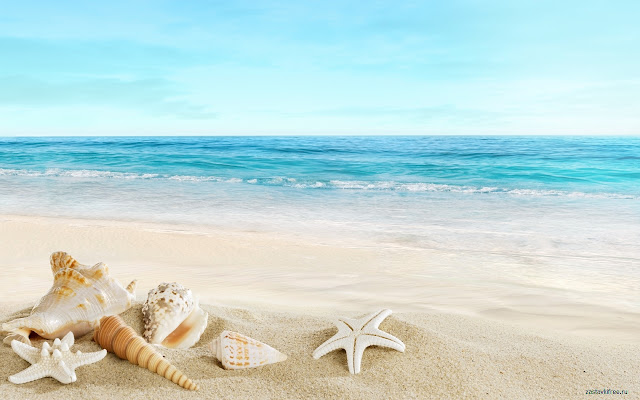

|

Seashore Buddies
|
|||||
| Home Page | Patar Beach Bolinao | Boracay | El Nido | Siargao Island | Hundred Islands |
|---|
Book a Tour |
“A beach is a landform alongside a body of water which consists of loose particles. The particles composing a beach are typically made from rock, such as sand, gravel, shingle, pebbles, etc., or biological sources, such as mollusc shells or coralline algae. Sediments settle in different densities and structures, depending on the local wave action and weather, creating different textures, colors and gradients or layers of material."
Though some beaches form on freshwater locations, most beaches are in coastal areas where wave or current action deposits and reworks sediments. Erosion and changing of beach geologies happens through natural processes, like wave action and extreme weather events. Where wind conditions are correct, beaches can be backed by coastal dunes which offer protection and regeneration for the beach. However, these natural forces have become more extreme due to climate change, permanently altering beaches at very rapid rates. Some estimates describe as much as 50 percent of the earth's sandy beaches disappearing by 2100 due to climate-change driven sea level rise.
Sandy beaches occupy about one third of global coastlines.These beaches are popular for recreation, playing important economic and cultural roles—often driving local tourism industries. To support these uses, some beaches have man-made infrastructure, such as lifeguard posts, changing rooms, showers, shacks and bars. They may also have hospitality venues (such as resorts, camps, hotels, and restaurants) nearby or housing, both for permanent and seasonal residents.
Human forces have significantly changed beaches globally: direct impacts include bad construction practices on dunes and coastlines, while indirect human impacts include water pollution, plastic pollution and coastal erosion from sea level rise and climate change. Some coastal management practices are designed to preserve or restore natural beach processes, while some beaches are actively restored through practices like beach nourishment.
Wild beaches, also known as undeveloped or undiscovered beaches, are not developed for tourism or recreation. Preserved beaches are important biomes with important roles in aquatic or marine biodiversity, such as for breeding grounds for sea turtles or nesting areas for seabirds or penguins. Preserved beaches and their associated dune are important for protection from extreme weather for inland ecosystems and human infrastructure.